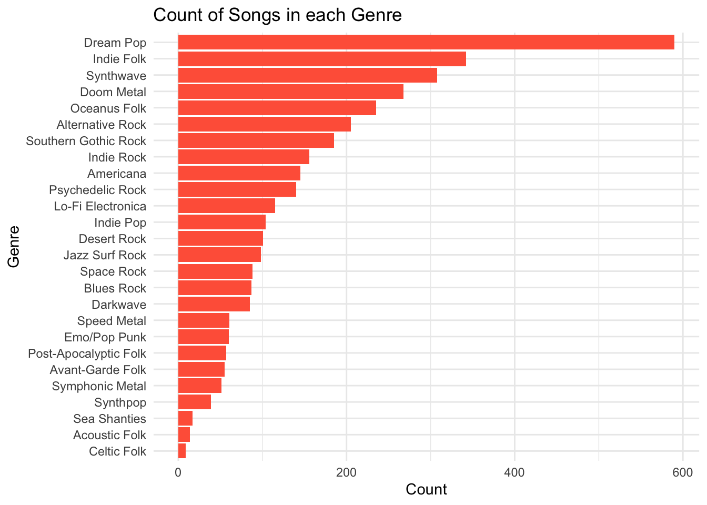

In this take-home exercise, we are required to select one of the module of our proposed Shiny application and complete the following tasks:
To evaluate and determine the necessary R packages needed for your Shiny application are supported in R CRAN,
To prepare and test the specific R codes can be run and returned the correct output as expected,
To determine the parameters and outputs that will be exposed on the Shiny applications, and
To select the appropriate Shiny UI components for exposing the parameters determine above.
2. Project Overview
This project seeks to design and develop insightful visualizations and analytic tools that allow users (like Silas) to explore the musical influence network centered on Sailor Shift. Specifically, we aim to:
Map Musical Influence: Visualize how Sailor Shift has been influenced by others and, in turn, how she has directly or indirectly influenced artists and genres.
Analyze Collaborations: Identify key collaborators throughout Sailor’s career, both from her early band (Ivy Echoes) and her solo years, and analyze the genres and roles of those collaborators.
Track Genre Evolution: Understand how Oceanus Folk evolved and interacted with genres like Indie Folk, Indie Pop, and Darkwave through stylized performances, lyrical themes, and musical structure.
Visualize Career Milestones: Highlight key turning points in Sailor’s career, including viral hits, genre shifts, and breakout collaborations using timeline and network-based views.
Compare Artists’ Careers: Contrast the musical journeys of Sailor’s former bandmates or contemporaries, and assess what defines a rising star in Oceanus Folk.
Predict Emerging Stars: Use influence and collaboration patterns to forecast the next potential breakout artists in the Oceanus Folk scene.
edges_categorized %>%count(edge_type) %>%ggplot(aes(y =reorder(edge_type, n), x = n)) +geom_col(fill ="steelblue") +labs(title ="Distribution of Edge Types", x ="Count", y ="Edge Type") +theme_minimal()
4.2 Count of Node Types
Show the code
nodes_categorized %>%count(node_type) %>%ggplot(aes(y =reorder(node_type, n), x = n)) +geom_col(fill ="tomato") +labs(title ="Distribution of Node Types", x ="Count", y ="Node Type") +theme_minimal()
4.3 Genre Distribution of Songs
Show the code
nodes_categorized %>%filter(node_type =="Song") %>%count(genre, sort =TRUE) %>%ggplot(aes(x =reorder(genre, n), y = n)) +geom_bar(stat ="identity", fill ="tomato") +coord_flip() +labs(title ="Count of Songs in each Genre", x ="Genre", y ="Count") +theme_minimal()

4.4 Temporal Distribution of Oceanus Folk Songs
Show the code
of_songs %>%filter(!is.na(release_date)) %>%count(release_date) %>%ggplot(aes(x =as.integer(release_date), y = n)) +geom_line(color ="purple") +labs(title ="Release Trend of Oceanus Folk Songs", x ="Year", y ="Number of Songs") +theme_minimal()
5. Influence Analysis
5.1 Temporal Spread of Influence from Oceanus Folk
Show the code
# Get influenced songs from Oceanus Folkinfluence_over_time <- influence_edges %>%filter(source %in% of_songs$id) %>%left_join(nodes_categorized, by =c("target"="id")) %>%filter(node_type =="Song", !is.na(release_date)) %>%mutate(release_year =as.integer(release_date)) %>%count(release_year, name ="influenced_count")# Create interactive time series plotplot_ly(influence_over_time,x =~release_year,y =~influenced_count,type ='scatter',mode ='lines+markers',line =list(color ='steelblue'),marker =list(size =6, color ='black'),text =~paste("Year:", release_year, "<br>Influenced Songs:", influenced_count),hoverinfo ='text') %>%layout(title ="Spread of Oceanus Folk Influence Over Time",xaxis =list(title ="Release Year of Influenced Songs"),yaxis =list(title ="Number of Influenced Songs"),hoverlabel =list(bgcolor ="white"))
5.2 Heatmap of Oceanus Folk Influence by Genre and Year
Show the code
# Prepare heatmap datainfluence_heatmap <- influence_edges %>%filter(source %in% of_songs$id) %>%left_join(nodes_categorized, by =c("target"="id")) %>%filter(!is.na(release_date), !is.na(genre)) %>%count(release_date, genre) %>%mutate(release_year =as.character(release_date),tooltip =paste("<b>", release_year, "</b>", "\nGenre : ", genre,"\nInfluenced Songs : ", n))# Create heatmapheat <-ggplot(influence_heatmap, aes(x = release_year, y = genre, fill = n)) +geom_tile(color ="white", size =1, aes(text = tooltip)) +theme_tufte(base_family ="Helvetica") +coord_equal() +scale_fill_gradient(name ="Influenced Songs", low ="#fff2f4", high ="coral") +labs(x ="Release Year", y ="Genre", title ="Oceanus Folk Influence by Genre and Year",caption ="Data Source: VAST Challenge 2025 MC1") +theme(axis.ticks =element_blank(),axis.text.x =element_text(size =8, angle =90, hjust =1),axis.text.y =element_text(size =8),plot.title =element_text(hjust =0.5, face ="bold"),legend.title =element_text(size =9),legend.text =element_text(size =7),legend.position ="top")# Convert to interactive plotggplotly(heat, tooltip ="text")
6. Network Visualizations
6.1 Network Analysis for Genres Influenced by Oceanus Folk
Show the code
## 6.1 Network Analysis for Genres Influenced by Oceanus Folk# Step 1: Filter outward-influenced nodes to songs with known genreoutward_genre_edges <- influence_edges %>%filter(source %in% of_songs$id) %>%left_join(nodes_categorized, by =c("target"="id")) %>%filter(node_type =="Song", !is.na(genre)) %>%transmute(from ="Oceanus Folk", to = genre) # Oceanus Folk → genre# Step 2: Count influence strength by genreoutward_genre_strength <- outward_genre_edges %>%count(to, name ="influence_count")# Step 3: Identify top 5 influenced genres and assign colorstop5_out_genres <- outward_genre_strength %>%arrange(desc(influence_count)) %>%slice(1:5) %>%mutate(color =rev(RColorBrewer::brewer.pal(5, "Oranges")))# Step 4: Build nodes for visNetworkoutward_genre_nodes <-unique(c(outward_genre_edges$from, outward_genre_edges$to)) %>%tibble(id = .) %>%left_join(outward_genre_strength, by =c("id"="to")) %>%left_join(top5_out_genres %>%select(id = to, top5_color = color), by ="id") %>%mutate(influence_count =replace_na(influence_count, 1),label = id,value = influence_count *2,color =case_when( id =="Oceanus Folk"~"#4682B4", # Blue for Oceanus Folk!is.na(top5_color) ~ top5_color, # Top 5 in Oranges paletteTRUE~"#FDD0A2"# Others in light orange ),title =paste0("Genre: ", id, "<br>Influence Count: ", influence_count) )# Save these for future usesaveRDS(outward_genre_nodes, "data/processed/outward_genre_nodes.rds")saveRDS(outward_genre_edges, "data/processed/outward_genre_edges.rds")# Render networkvisNetwork(outward_genre_nodes, outward_genre_edges, height ="600px", width ="100%") %>%visEdges(arrows ="to") %>%visOptions(highlightNearest =TRUE) %>%visLayout(randomSeed =456) %>%visPhysics(enabled =FALSE)